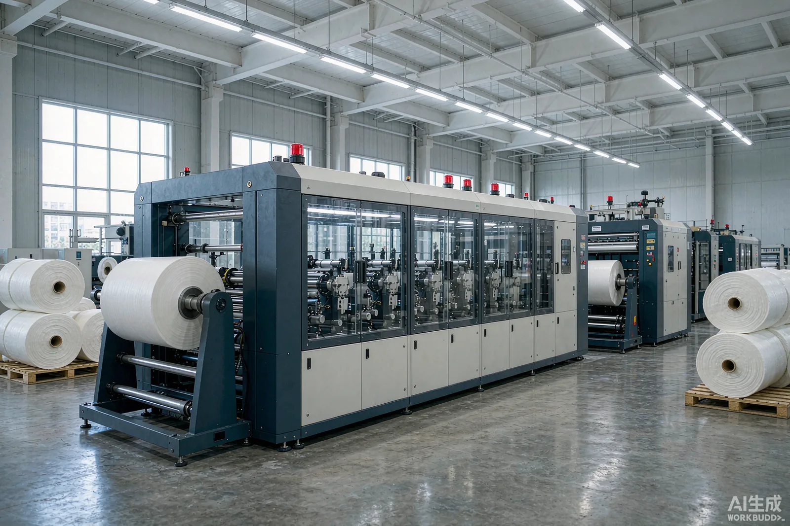
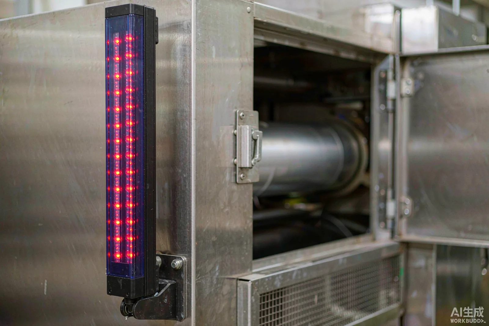

Published September 14, 2026 | By HDPTH Technical Editorial Team

A slitter rewinder is one of the more hazard-dense machines in a converting plant. It combines rotating shafts carrying multi-hundred-kilogram rolls, ingoing nip points at every contact roll and pull roller, exposed cutting edges, pneumatic actuators, and operator tasks — threading, splicing, jam clearing, blade changes — that place hands close to all of it.
The right time to engineer safety is in the RFQ. This guide explains what to specify, what the common safeguarding options actually do, and how to verify the package before shipment. It focuses on machine guarding and safety functions; for CE paperwork and market-access documents, see the separate CE marking checklist for slitter rewinders.
Start from a machine-specific risk assessment
No safeguard layout can be copied from a brochure. The supplier should perform a risk assessment for the exact configuration quoted — unwind style, web path, slitting method, rewind arrangement, roll-handling equipment and operator workflow. For each hazard zone, it should state the hazard, who is exposed and when, the severity and probability of harm, and the protective measure chosen. Ask for it as a controlled document with the quotation or before contract signing, not as a PDF attached to the shipping crate — then review it against your plant reality, because a machine documented as auto-loaded but actually hand-fed has a different risk picture than the one on paper.
Fixed guards and interlocked gates
Fixed guards are the first and cheapest layer. They physically enclose hazards that need no routine access: drive couplings, gearboxes, rotating shaft ends, belt drives and the underside of the machine frame. Specify construction, not just existence: panel material and thickness, opening size versus distance from the hazard, tool-required fasteners, and resistance to roll mass if a failing roll could strike the guard.
Where operators need routine access — roll loading, threading, splice tables, knife-change positions — use interlocked gates rather than removable panels. Specify, for every gate: the interlock type (tongue, coded magnetic or guard-locking switch) and whether it is coded against defeat; whether guard locking holds the gate until rotating parts are below a safe speed, which matters at unwind and rewind where rolls coast long after a stop command; what opening the gate stops — full stop, reduced speed with hold-to-run, or inching — and which tasks are permitted in each state; and whether interlock circuits are monitored for wiring faults, not just position.
Insist on a gate schedule in the documentation: one table listing every access point, its interlock device, its stop category and the permitted tasks — your acceptance checklist and training material in one.
Presence-sensing devices: light curtains, scanners and mats
Electro-sensitive protective equipment (ESPE) is appropriate where guarding must allow frequent, hands-free access — for example at a splice table where the operator works while the line creeps. The three common options trade reach against cost:
| Device | Best use | Key specification points |
|---|---|---|
| Safety light curtain | Point-of-access protection at splice tables, transfer zones, knife-change positions | Resolution (14/30 mm finger vs hand detection), protective height, safety distance from hazard, muting and blanking logic |
| Vertical light curtain / safety scanner | Area protection around unwind or rewind where rolls are handled | Scanning field geometry, restart-interlock behavior, contamination immunity for dusty converting environments |
| Safety mat or edge sensor | Floor-level detection around large machines with wide access perimeters | Coverage area, response time contribution to total stopping distance, mechanical durability |
The critical engineering point is the safety distance: a light curtain must sit far enough from the hazard that a person cannot reach it before the machine has stopped. That calculation needs the measured stopping time of the machine — so stopping performance is a specification item, not a test afterthought. Require the supplier to state total stopping time at maximum speed and roll diameter, and to derive every ESPE mounting distance from that figure.

Emergency stop architecture
E-stops are not a substitute for guarding; they are a backstop for abnormal situations. Specify:
- Coverage: e-stop devices within easy reach of every operating position — control panel, unwind, splice table, rewind, and any remote stations such as core-loading areas.
- Stop category: which motion stops and how (immediate power removal versus controlled deceleration), consistent with the risk assessment.
- State after reset: resetting an e-stop must never restart motion by itself; a separate, deliberate start action is required, and interlocked gates must remain enforced.
- Visibility and annunciation: which e-stop was pressed should be identifiable on the HMI so fault-finding after a stop does not encourage unsafe investigation.
LOTO: safe maintenance, threading and jam clearing
Lockout/tagout (LOTO) is the discipline of isolating every hazardous energy source — electrical, pneumatic and stored mechanical energy such as a coasting roll — before anyone intervenes. In the United States, OSHA 29 CFR 1910.147 governs the control of hazardous energy during servicing, and 29 CFR 1910.212 sets general machine-guarding requirements. The supplier’s role is to make LOTO practical. Specify:
- A main isolator that is lockable in the off position and visually verifiable.
- Pneumatic dump valves that vent the air circuit when isolated, with residual pressure relief.
- Zero-energy verification points — test terminals or indicators that confirm de-energization.
- Dissipation of stored energy: braked or automatically lowered shaft arms, controlled roll coast-down, web clamping so cut ends do not spring.
- Procedures in the manual for threading, knife change, jam recovery and cleaning, each written around LOTO rather than around speed.
If your plant already runs a LOTO program, give the supplier your procedure during design so isolation points sit where technicians need them.
Safety-related controls: categories and reliability in plain terms
Safeguarding is only as reliable as the control circuits behind it. Standards such as ISO 13849-1 grade safety-related control functions by categories and performance levels, roughly reflecting fault tolerance and reliability on demand. Buyers can translate this into three questions: which safety functions exist and what reliability target does each carry according to the risk assessment; are they implemented in dedicated, monitored hardware (safety relays or a safety controller) rather than inside the production PLC program; and is the wiring architecture resistant to single faults — dual channels where required, monitored cross-monitoring, positively driven contacts — documented in a circuit description you can read?
Where machinery is destined for the EU, the applicable machinery legislation requires this assessment to exist and to be proportionate to the hazards; the detailed file content is covered in the CE-marking article referenced above. The buyer’s job here is narrower: confirm the safety architecture is engineered, documented and testable — not merely that the words appear in the quotation.
Safety acceptance checklist for FAT and installation
Safety claims must be verified by test before shipment. Use this checklist as the safety section of your FAT plan:
- Risk assessment delivered, reviewed and signed; every identified hazard mapped to a safeguard.
- Gate schedule verified on the machine: every access point has the stated interlock type and stop behavior.
- Each interlocked gate tested: opening stops motion, gate cannot be defeated by tape or a cable tie, restart requires deliberate action at the point of operation.
- Guard locking proven at unwind and rewind: gates stay locked until roll speed is below the agreed threshold.
- Light curtains: mounting distance checked against measured stopping time; test-piece interruption stops the line in every operating mode; muted and blanked zones behave per specification.
- Measured stop time at maximum speed and maximum roll diameter, repeated at least three times, recorded on the FAT report.
- Every e-stop device pressed in turn: correct stop, no restart on reset, alarm annunciation identifies the source.
- Power-loss test: safe-state restart after a controlled power interruption.
- LOTO demonstration: main isolator lockable, pneumatic circuit verifiably vented, coasting rolls controlled or guarded until stopped.
- Documentation package complete: safety circuit descriptions, interlock and ESPE schedules, maintenance procedures, spare-part list for safety components.
Repeat the gate, light-curtain and e-stop tests again at installation acceptance, after the machine is joined to its material-handling equipment and final fencing, because the surrounding layout can create new hazards the factory test could not see. The verification method is the same one used in the slitter rewinder FAT checklist: agree the pass/fail values in advance, test with representative conditions, and sign the recorded data.
Put safety on the RFQ, not the punch list
Send HDPTH your material, machine layout, operator workflow and destination safety requirements. We will return a safeguarding concept with a gate schedule, sensing plan and testable acceptance criteria.
Submit Your Project InquiryFrequently asked questions
Which safety standard applies to a slitter rewinder imported into the EU?
Machinery placed on the EU market must comply with the applicable machinery legislation, supported by a machine-specific risk assessment and harmonised standards such as ISO 13849-1 for safety-related control systems. The safeguards themselves must match the hazards identified on that specific machine.
Are safety light curtains enough on their own?
No. Light curtains and other presence-sensing devices are one layer. They must be matched to the measured stopping performance of the machine, positioned at the correct safety distance, and combined with fixed guards, interlocked gates, a compliant e-stop architecture and safe maintenance procedures.
What is LOTO and why does it matter for converting machinery?
Lockout/tagout (LOTO) is the practice of isolating and locking all hazardous energy sources before intervention. Slitter rewinders combine electrical, pneumatic and sometimes thermal or stored mechanical energy, and web threading or jam clearing puts operators close to rolls and knives, so a documented LOTO procedure is essential.
What safety items should be checked at factory acceptance?
Verify the risk-assessment deliverables, guard dimensions and interlock function, light-curtain safety distance and muting logic, stop-time measurement against the calculated distance, e-stop coverage and reset behavior, power-loss behavior, alarm annunciation, and the completeness of safety-related documentation.
Can older slitter rewinders be retrofitted with modern guarding?
Often yes, but a retrofit is an engineering project, not a bolt-on purchase. Stopping times, control architecture, gate geometry and operator workflow must be re-assessed, and the upgraded machine should be revalidated as a whole rather than assumed safe because new components were added.